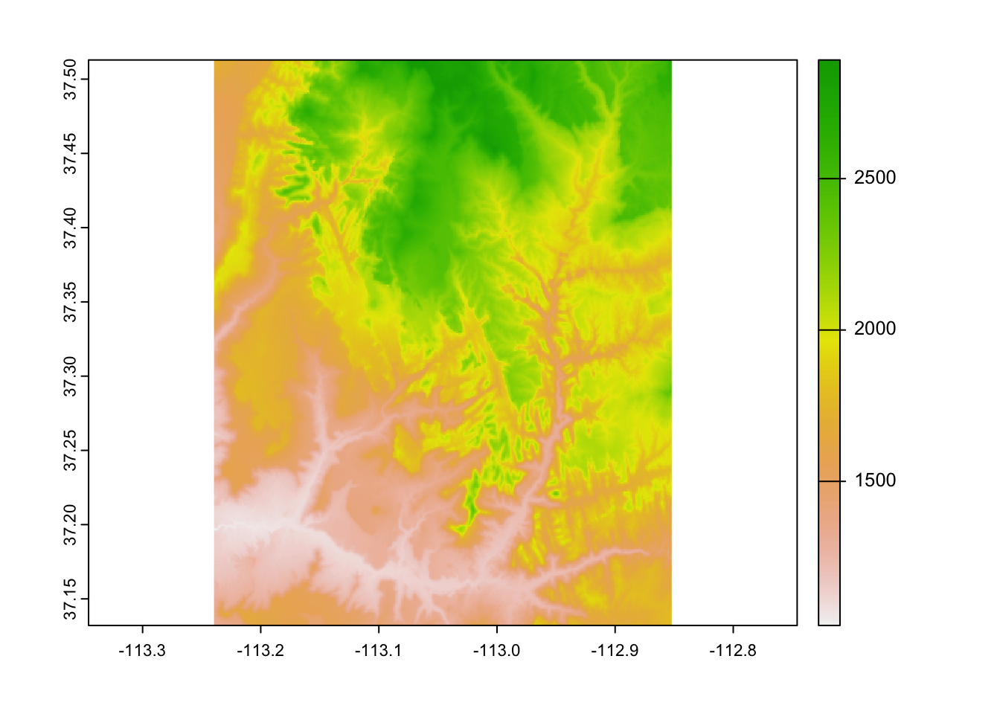
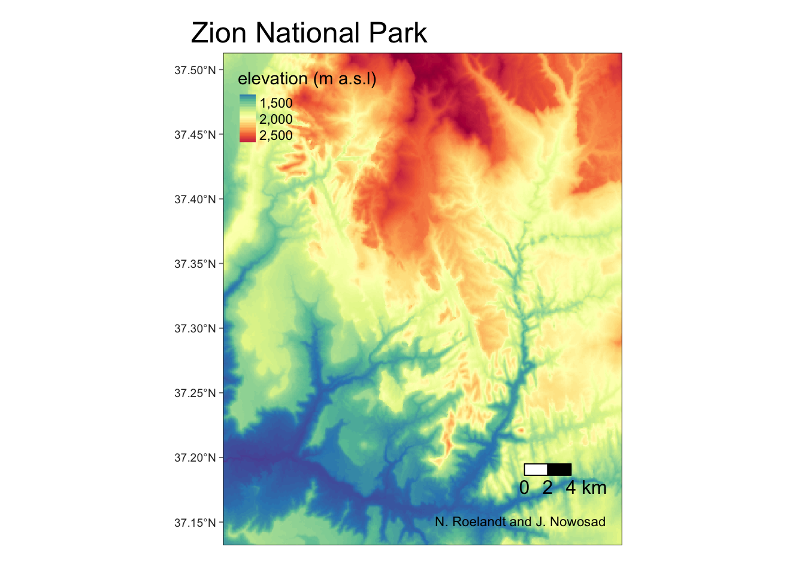

Chapter 5 Manipulating raster data
This chapter requires the following packages:
5.1 Example data
We will read a few datasets for this chapter.
It includes srtm.tif – an elevation raster data the Zion National Park area:
We can quickly look at this dataset’s summary by just typing its name:
## class : SpatRaster
## dimensions : 457, 465, 1 (nrow, ncol, nlyr)
## resolution : 0.0008333333, 0.0008333333 (x, y)
## extent : -113.2396, -112.8521, 37.13208, 37.51292 (xmin, xmax, ymin, ymax)
## coord. ref. : lon/lat WGS 84 (EPSG:4326)
## source : srtm.tif
## name : srtm
## min value : 1024
## max value : 2892We can also extract each information separately using the following functions:
## [1] 465## [1] 457## [1] 1## [1] 0.0008333333 0.0008333333## SpatExtent : -113.239583212784, -112.85208321281, 37.1320834298579, 37.5129167631658 (xmin, xmax, ymin, ymax)Next, we can quickly look at the data with the plot() function…

… or create more customized map with the {tmap} package:
tm_shape(srtm) +
tm_graticules() +
tm_raster(style = "cont",
title = "elevation (m a.s.l)",
palette = "-Spectral") +
tm_scale_bar(breaks = c(0, 2, 4),
text.size = 1) +
tm_credits("Jakub Nowosad, 2022") +
tm_layout(inner.margins = 0,
main.title = "Zion National Park")
Additional raster dataset we use in this chapter is nlcd.tif – a simplified version of the National Land Cover Database 2011 product for the Zion National Park area.
5.2 Map algebra
Map algebra is used for a various task related to spatial raster data processing and analysis.
It can be divided into four groups of operations:
- Local - per-cell operations
- Focal - most often the output cell value is the result of a 3 x 3 input cell block
- Zonal - to summarize raster values for some zones (usually irregular areas)
- Global - to summarize raster values for one or several rasters
5.2.1 Local operations
Numerical computations are basic examples of local operations – we can create new raster objects by, for example, adding or subtracting existing values:

Another example of local operation is when we want to replace some values.
This can be done by either subst() or classify().
The subst() function is useful when we want to quickly replace some value(s).

On the other hand, the classify() function is more useful when we want to replace many values.
It requires at least two arguments – our input raster and a reclassification table.
Reclassification table is a matrix usually with two columns (old/new) or three columns (from/to/new):
## [,1] [,2] [,3]
## [1,] 0 1500 1
## [2,] 1500 2000 2
## [3,] 2000 9999 3
The last example of local operation is useful when we have many raster layers and want to calculate, for example, spectral indices, such as NDVI. In this case, each cell’s values are treated independently.
To showcase local operations on many layers, we will use the landsat.tif dataset.
It contains four bands (2, 3, 4, 5) of the Landsat 8 image for the area of Zion National Park.
landsat_path <- system.file("raster/landsat.tif", package = "spDataLarge")
landsat <- rast(landsat_path)
landsat## class : SpatRaster
## dimensions : 1428, 1128, 4 (nrow, ncol, nlyr)
## resolution : 30, 30 (x, y)
## extent : 301905, 335745, 4111245, 4154085 (xmin, xmax, ymin, ymax)
## coord. ref. : WGS 84 / UTM zone 12N (EPSG:32612)
## source : landsat.tif
## names : landsat_1, landsat_2, landsat_3, landsat_4
## min values : 7550, 6404, 5678, 5252
## max values : 19071, 22051, 25780, 31961
Normalized Difference Vegetation Index (NDVI) is one of the most commonly used spectral index. It uses values of two bands: red (3) and near-infrared (4):
\[ \begin{split} NDVI&= \frac{\text{NIR} - \text{Red}}{\text{NIR} + \text{Red}}\\ \end{split} \]
The above equation can be rewritten as an R function that accepts two arguments, and returns a result of the calculations.
Now, we can apply our ndvi_fun() to the lapp() function.
The only important thing we need to remember is to subset our raster to contain only the needed layers:

5.2.3 Zonal operations
?zonal
Also known as zonal statistics. Result - a summary table

## levels srtm
## 1 Water 2227.060
## 2 Developed 1699.510
## 3 Barren 1853.950
## 4 Forest 1996.807
## 5 Shrubland 1650.796
## 6 Herbaceous 1644.282
## 7 Cultivated 1288.272
## 8 Wetlands 1262.5785.3 Transformations
5.3.1 Resampling
## class : SpatRaster
## dimensions : 457, 465, 1 (nrow, ncol, nlyr)
## resolution : 0.0008333333, 0.0008333333 (x, y)
## extent : -113.2396, -112.8521, 37.13208, 37.51292 (xmin, xmax, ymin, ymax)
## coord. ref. : lon/lat WGS 84 (EPSG:4326)
## source : srtm.tif
## name : srtm
## min value : 1024
## max value : 2892## class : SpatRaster
## dimensions : 381, 387, 1 (nrow, ncol, nlyr)
## resolution : 0.001, 0.001 (x, y)
## extent : -113.2396, -112.8526, 37.13208, 37.51308 (xmin, xmax, ymin, ymax)
## coord. ref. : lon/lat WGS 84 (EPSG:4326)## class : SpatRaster
## dimensions : 381, 387, 1 (nrow, ncol, nlyr)
## resolution : 0.001, 0.001 (x, y)
## extent : -113.2396, -112.8526, 37.13208, 37.51308 (xmin, xmax, ymin, ymax)
## coord. ref. : lon/lat WGS 84 (EPSG:4326)
## source : memory
## name : srtm
## min value : 1032.44
## max value : 2891.255.3.2 Reprojecting rasters
## name authority code area extent
## 1 WGS 84 EPSG 4326 <NA> NA, NA, NA, NA

## name authority code
## 1 WGS 84 / UTM zone 12N EPSG 32612
## area
## 1 Between 114°W and 108°W, northern hemisphere between equator and 84°N, onshore and offshore. Canada - Alberta; Northwest Territories (NWT); Nunavut; Saskatchewan. Mexico. United States (USA)
## extent
## 1 -114, -108, 84, 0
5.4 Raster-vector interactions
- Raster cropping and masking
- Raster extraction - by points, lines, and polygons
- Rasterization - points, lines, polygons to rasters
- Vectorization - rasters to polygons or contours
5.4.2 Raster extraction

zion_extract <- terra::extract(srtm, vect(zion_points))
zion_points <- cbind(zion_points, zion_extract)
zion_points## Simple feature collection with 30 features and 2 fields
## Geometry type: POINT
## Dimension: XY
## Bounding box: xmin: -113.2077 ymin: 37.16632 xmax: -112.8717 ymax: 37.43165
## Geodetic CRS: WGS 84
## First 10 features:
## ID srtm geom
## 1 1 1802 POINT (-112.9159 37.20013)
## 2 2 2433 POINT (-113.0937 37.39263)
## 3 3 1886 POINT (-113.0246 37.33466)
## 4 4 1370 POINT (-112.9611 37.24326)
## 5 5 1452 POINT (-112.9898 37.20847)
## 6 6 1635 POINT (-112.8807 37.19319)
## 7 7 1380 POINT (-113.0505 37.24061)
## 8 8 2032 POINT (-113.0953 37.34965)
## 9 9 1830 POINT (-113.0362 37.31429)
## 10 10 1860 POINT (-113.2077 37.43165)zion <- read_sf(system.file("vector/zion.gpkg", package = "spDataLarge"))
zion <- st_transform(zion, crs(srtm))
zion_srtm_values <- terra::extract(srtm, vect(zion))## ID srtm
## 1 1 1666
## 2 1 1677
## 3 1 1708
## 4 1 1735
## 5 1 1751
## 6 1 1770
library(dplyr)
zion_srtm_values |>
group_by(ID) |>
summarize(across(srtm, list(min = min, mean = mean, max = max)))## # A tibble: 1 × 4
## ID srtm_min srtm_mean srtm_max
## <dbl> <int> <dbl> <int>
## 1 1 1122 1818. 26615.6 Raster analysis
5.6.1 Predictions
landsat_path <- system.file("raster/landsat.tif", package = "spDataLarge")
landsat <- rast(landsat_path)
zion_points_utm <- st_transform(zion_points, crs = crs(landsat))
landsat_s <- stretch(landsat, maxq = 0.98)
plotRGB(landsat_s, r = 3, g = 2, b = 1)
plot(st_geometry(zion_points_utm), add = TRUE, col = "red", cex = 3)
?predict - glm, randomForest, prcomp
zion_points_utm_v <- extract(landsat_s, vect(zion_points_utm))
pca <- prcomp(zion_points_utm_v[-1])
pca## Standard deviations (1, .., p=4):
## [1] 83.689718 24.939305 9.388554 3.530974
##
## Rotation (n x k) = (4 x 4):
## PC1 PC2 PC3 PC4
## landsat_1 -0.5080760 0.20402128 -0.68068384 -0.4867274
## landsat_2 -0.5321682 0.07684548 -0.17022642 0.8257813
## landsat_3 -0.5783656 0.31318090 0.70849728 -0.2558175
## landsat_4 -0.3523479 -0.92433101 0.07565763 -0.1254554?predict - glm, randomForest, prcomp

5.6.2 Interpolations
?interpolate
library(fields)
tps <- Tps(st_coordinates(zion_points_utm),
zion_points_utm$srtm)
rt <- rast(srtm_utm)
interp1 <- interpolate(rt, tps)
library(gstat)
interpolate_gstat <- function(model, x, crs, ...) {
v = st_as_sf(x, coords = c("x", "y"), crs = crs)
p = predict(model, v, ...)
as.data.frame(p)[, 1:2]
}v <- variogram(srtm ~ 1, data = zion_points_utm)
# plot(v)
mv <- fit.variogram(v, vgm(120000, "Exp", 12000, nugget = 10000))
g_OK <- gstat(NULL, "srtm", srtm ~ 1, zion_points_utm, model = mv)
OK <- interpolate(rt, g_OK, debug.level = 0, fun = interpolate_gstat,
crs = crs(rt), index = 1)
plot(OK)
5.6.3 Segmentations
https://github.com/Nowosad/supercells
library(supercells)
ortho <- rast(system.file("raster/ortho.tif", package = "supercells"))
plot(ortho)
ortho_slic1 <- supercells(ortho, k = 200, compactness = 10)
plot(ortho)
plot(st_geometry(ortho_slic1), add = TRUE)
rgb_to_hex <- function(x){
apply(t(x), 2, function(x) rgb(x[1], x[2], x[3], maxColorValue = 255))
}
avg_colors <- rgb_to_hex(st_drop_geometry(ortho_slic1[4:6]))
plot(ortho)
plot(st_geometry(ortho_slic1), add = TRUE, col = avg_colors)